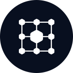
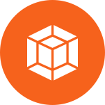
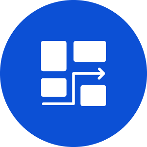

Move forward.
Move smart.
Achieve sustainable growth and operational excellence with our fractional CISO service and expert guidance on your cybersecurity, risk and regulatory compliance needs.
Expertise and Experience
GrowthPoint can help regardless of where you are on your cybersecurity journey. If you are just getting started and need to structure a new program or if you have an existing program that needs to be streamlined to scale, we have the experience to help.

STRUCTURE

STRENGTHEN

STREAMLINE
SCALE
Build and scale with confidence
Our Services
CISO Services
GrowthPoint offers monthly retainer based fractional CISO services to help you establish, grow, and mature your cybersecurity program. We build durable programs that last.
Learn MoreCybersecurity and Regulatory Compliance Projects
You may have a specific project or need such as a HIPAA risk assessment, policy and standards development, table top exercise, or preparation for ISO 27001 or SOC 2. We provide project-based services to deliver specific results that you need now.
Learn MoreLatest Blog Posts & Insights
Read more about our cybersecurity, risk and regulatory compliance topics.

Stacey consistently brings deep expertise at the intersection of business, technology, cybersecurity, and compliance. He has a unique ability to collaborate across technical teams, executives, and operational stakeholders to align technology and security initiatives with business goals and drive meaningful results. His strategic mindset, relentless curiosity, and leadership style make him an exceptional partner and a true asset to any organization.